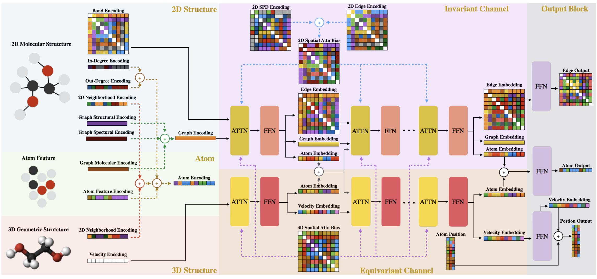
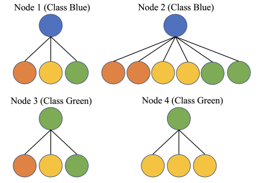
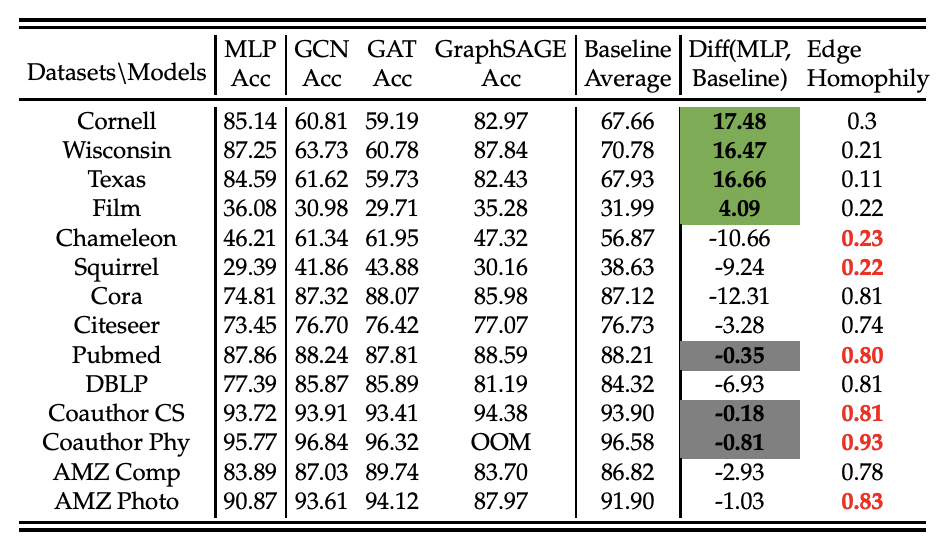
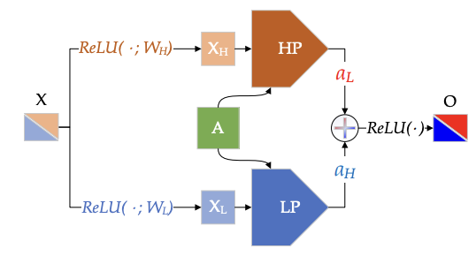
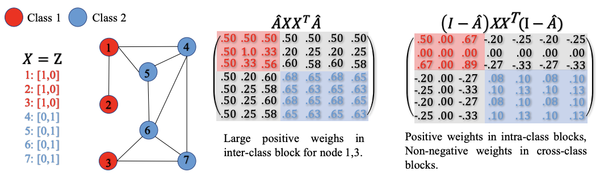
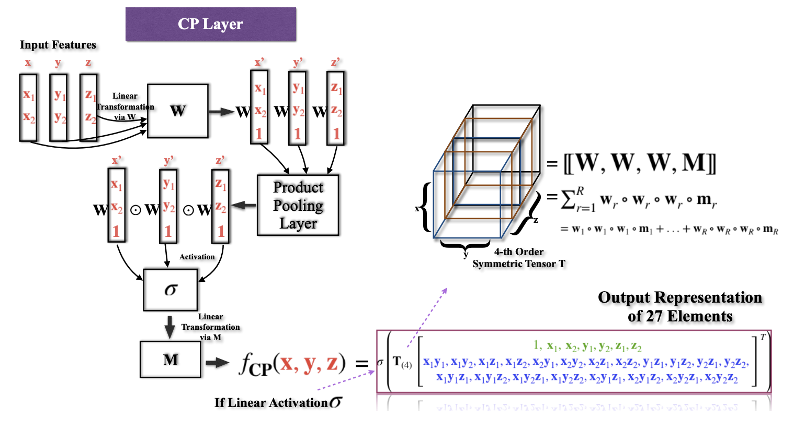
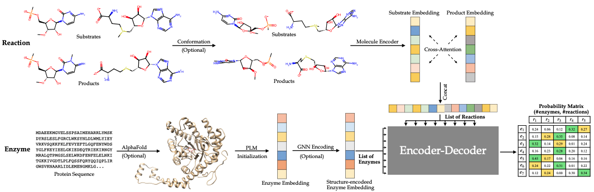
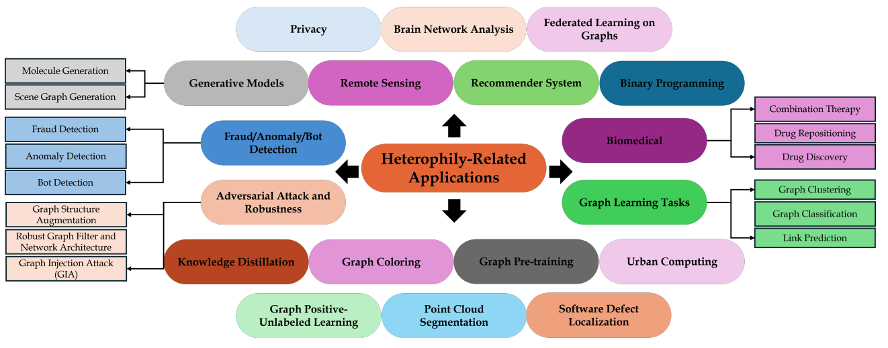
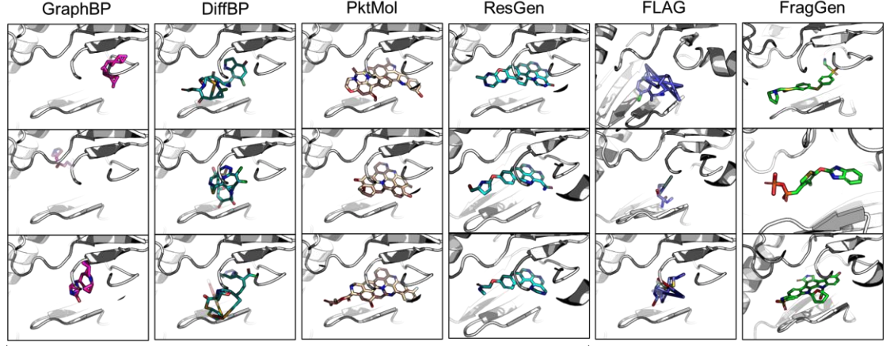

About
News
- Give a talk on protein-protein interaction prediction to Jian Tang's group. [Slide]
- Give a talk on structure-based molecule design at LoG2023 Montreal. [Slide][Video]
- One paper accepted to 2nd Learning on Graphs Conference.
- One paper accepted to 37th Conference on Neural Information Processing Systems.
- One paper accepted to 12th International Conference on Complex Networks and their Applications.
- One paper accepted to 36th Conference on Neural Information Processing Systems, GLFrontiers, and selected for Oral presentation.
- Two papers accepted to 36th Conference on Neural Information Processing Systems, and one paper selected for Spotlight presentation.
Publications

MUDiff: Unified Diffusion for Complete Molecule Generation
Learning On Graphs Conference, 2023

When Do Graph Neural Networks Help with Node Classification? Investigating the Homophily Principle on Node Distinguishability
Neural Information Processing Systems, 2023

When Do We Need GNN for Node Classification?
International Conference on Complex Networks and their Applications, 2023

Complete the Missing Half: Augmenting Aggregation Filtering with Diversification for Graph Convolutional Networks
Neural Information Processing Systems GLFrontiers, 2022
Oral Presentation

Revisiting Heterophily For Graph Neural Networks
Neural Information Processing Systems, 2022
Spotlight Presentation

High-Order Pooling for Graph Neural Networks with Tensor Decomposition
Neural Information Processing Systems, 2022
Preprints

Reactzyme: A Benchmark for Enzyme-Reaction Prediction
Preprint

Evaluation Pitfalls and New Benchmarks for Heterophilic Graph Representation Learning
Preprint
The Heterophilic Graph Learning Handbook: Benchmarks, Models, Theoretical Analysis, Applications and Challenges
Preprint

Deep geometry handling and fragment-wise molecular 3d graph generation
Preprint